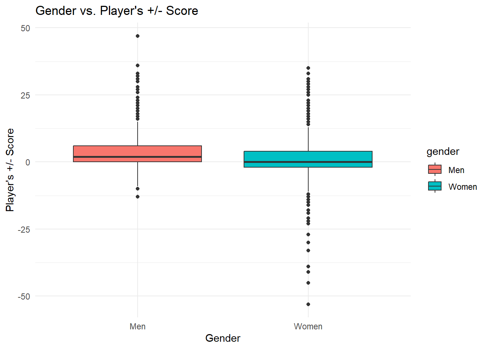
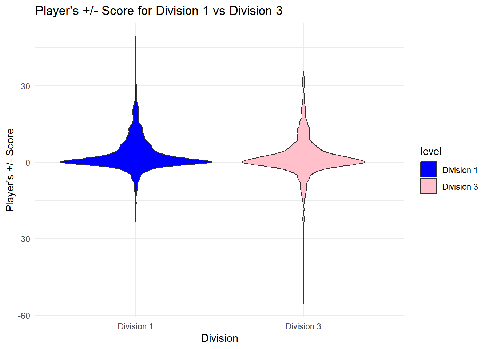
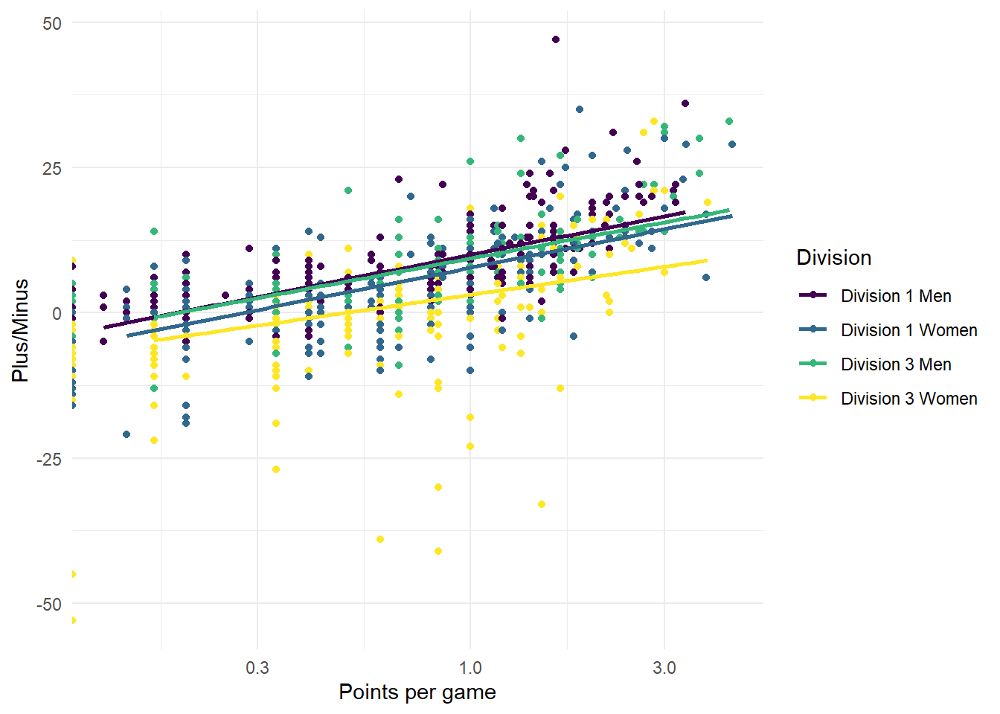
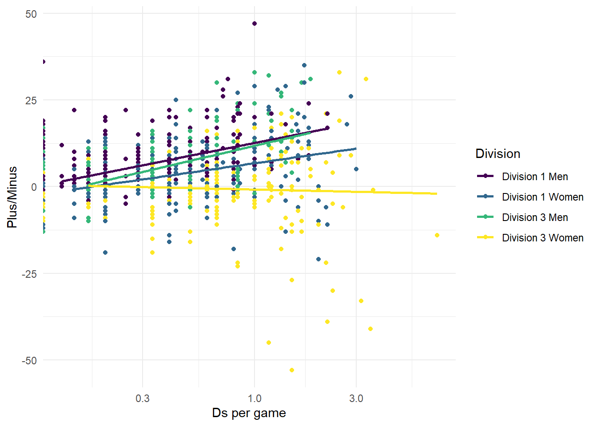

── Conflicts ────────────────────────────────────────── tidyverse_conflicts() ──
✖ dplyr::filter() masks stats::filter()
✖ dplyr::lag() masks stats::lag()
ℹ Use the conflicted package (<http://conflicted.r-lib.org/>) to force all conflicts to become errors
Rows: 1665 Columns: 16
── Column specification ────────────────────────────────────────────────────────
Delimiter: ","
chr (5): player, level, gender, division, team_name
dbl (11): Turns, Ds, Assists, Points, plus_minus, team_games, turns_per_game...
ℹ Use `spec()` to retrieve the full column specification for this data.
ℹ Specify the column types or set `show_col_types = FALSE` to quiet this message.
Exploring the Data
Answer the following questions:
What is your outcome variable(s)? How well does it measure the outcome you are interested? How does it relate to your expectations?
Our outcome variable is plus_minus, which is the difference between the amount of points scored by an individual player’s team while that player is on the field and the amount of points scored by the opposing team while that player is on the field. We are interested in the influence of an individual player on the success of the whole team, so this variable is a good measure of our outcome of interest.
Essentially, +/- for a select player = points scored by player’s team (while player is on the field) - points scored by opposing team (while player is on the field)
The +/- score is used to track a player’s overall effectiveness on the field and their impact on the game. A positive +/- score means the player’s team scored more than the opposing team while the player was on the field, and a negative +/- score means the opposing team scored more while the player was on the field.
What are your key explanatory variables?
Turns (turnovers) per game, points scored per game, Ds (defensive interceptions) per game, level (Division 1 or 3), division (Men’s or Women’s) and school.
In addition, create a table of summary statistics for the variables you are planning to use.
Are you deciding to exclude any observations? If so, why?
Did you have to create any new variables from existing variables? If so, how and why?
Codebook
You must add a codebook – a description of all variables you are using, including ones you are creating for this project – to the README.md page of the data/ folder of your repo.
Data Visualization
You must include at least 4 visualizations of your data made in R. You must include your outcome variable in at least two plots and your key explanatory variable in at least two of these plots. You must use visualizations that are appropriate for the data type (categorical vs numeric, continuous vs discrete) of your outcome and explanatory variables. For example, you should not use a histogram to plot a categorical variable.
ggplot(ultimate_data, aes(x = gender, y = plus_minus, fill = gender)) +geom_boxplot() +labs(title ="Gender vs. Player's +/- Score",x ="Gender",y ="Player's +/- Score" ) +theme_minimal()

ggplot(ultimate_data, aes(x = level, y = plus_minus, fill = level)) +geom_violin(trim =FALSE) +labs(title ="Player's +/- Score for Division 1 vs Division 3",x ="Division",y ="Player's +/- Score" ) +scale_fill_manual(values =c("Division 1"="blue", "Division 3"="pink")) +theme_minimal()

ultimate_data %>%ggplot(aes(x = pts_per_game, y = plus_minus, color = division)) +geom_point() +geom_smooth(method ='lm', se = F) +scale_x_log10() +labs(x ="Points per game", y ="Plus/Minus", color ="Division") +theme_minimal() +scale_color_viridis_d()
Warning: Removed 550 rows containing non-finite outside the scale range
(`stat_smooth()`).

ultimate_data %>%ggplot(aes(x = ds_per_game, y = plus_minus, color = division)) +geom_point() +geom_smooth(method ='lm', se = F)+theme_minimal() +scale_x_log10() +labs(x ="Ds per game", y ="Plus/Minus", color ="Division") +scale_color_viridis_d()
Warning: Removed 638 rows containing non-finite outside the scale range
(`stat_smooth()`).

ultimate_data %>%ggplot(aes(x = turns_per_game, y = plus_minus, color = division)) +geom_point() +geom_smooth(method ='lm', se = F) +scale_x_log10() +labs(x ="Turns per game", y ="Plus/Minus", color ="Division") +theme_minimal() +scale_color_viridis_d()